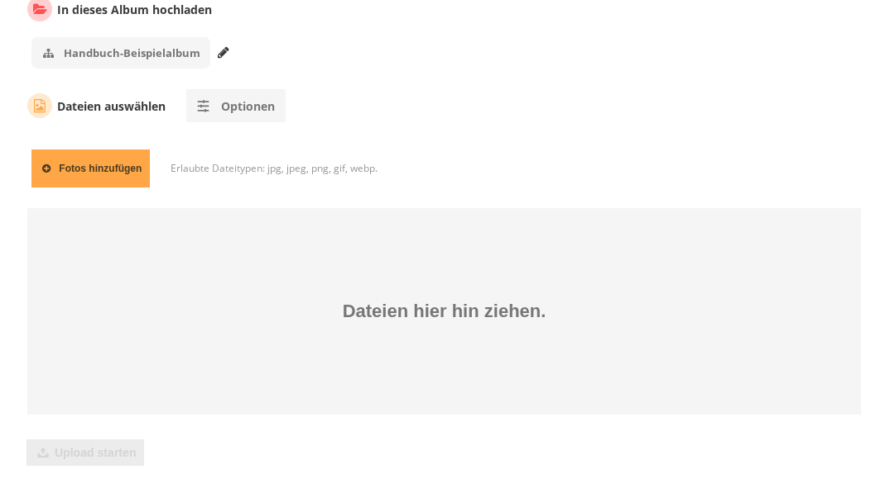
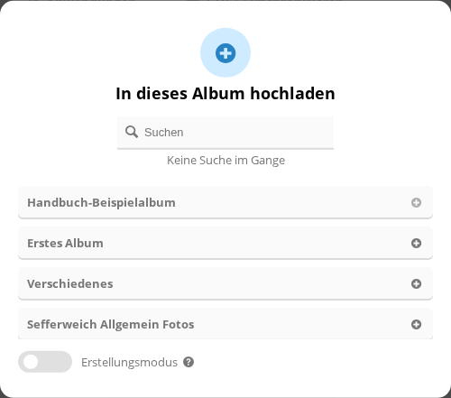
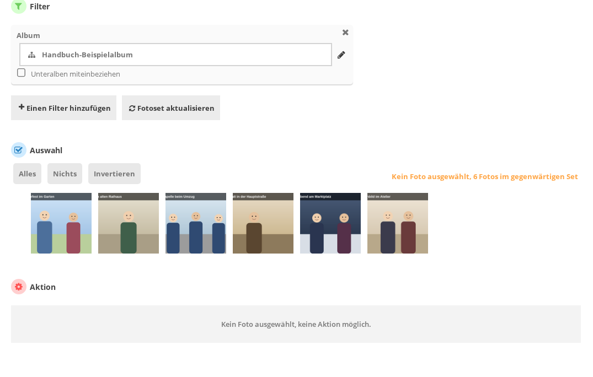
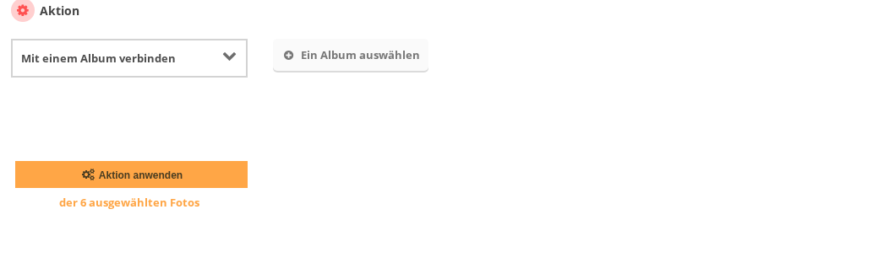

Der übliche Weg ist der Upload im Browser unter
Fotos » Hinzufügen
(admin.php?page=photos_add). Ein Foto kann anschließend weiteren Alben
zugeordnet werden, ohne es erneut hochzuladen. Beides ist der Verwaltung vorbehalten.
Fotos hochladen
Verwaltung » Fotos » Hinzufügen öffnen. Aus der
Albenliste führt auch die Schaltfläche Fotos hinzufügen in der Zeile eines
Albums direkt dorthin, mit diesem Album bereits ausgewählt.
Unter In dieses Album hochladen prüfen, welches Album eingetragen ist.
Auf Fotos hinzufügen klicken und die Dateien auswählen, oder die Dateien
in das Feld Dateien hier hin ziehen. ziehen.
Auf Upload starten klicken. Die Schaltfläche ist erst aktiv, wenn
mindestens eine Datei ausgewählt ist. Während der Übertragung kann der Vorgang mit
Abbrechen beendet werden.

Der Upload. Über der Ablagefläche stehen das Zielalbum und die erlaubten Dateitypen.
Nach dem Upload meldet die Seite ... Fotos hochgeladen und darunter
Album ... enthält jetzt ... Fotos, wobei der Albumname ein Link zum Album
ist. Dazu erscheinen zwei Weiterführungen: Dieses Set von ... Fotos verwalten
öffnet die eben hochgeladenen Fotos in der Stapelverarbeitung,
Ein weiteres Fotoset hinzufügen beginnt von vorn. Die Fotos sind sofort im
Album sichtbar.
Erlaubt sind jpg, jpeg, png, gif und webp. Andere Dateien
weist Piwigo ab. Die Angabe steht neben der Schaltfläche Fotos hinzufügen
auf dem Bildschirm. Eine einzelne Datei darf bis zu 1000 MB groß sein.
Die Schaltfläche Optionen blendet einen Schalter ein: Wenn ein Foto in
diesem Album denselben Dateinamen hat, aktualisieren Sie die Datei, ohne die Eigenschaften
des Fotos zu ändern. Damit wird eine bestehende Bilddatei ersetzt, während Titel,
Beschreibung und Schlagworte des Fotos erhalten bleiben. Ohne diesen Schalter entsteht ein
zweites Foto.
Ein anderes Zielalbum wählen
Auf den Stift neben dem Albumnamen klicken.
Im Dialog In dieses Album hochladen das Album aus der Liste wählen oder
oben im Feld Suchen nach seinem Namen suchen.
Ist das gewünschte Album noch nicht vorhanden, den Schalter
Erstellungsmodus einschalten. Damit lässt sich ein Album direkt in diesem
Dialog anlegen und auswählen.

Die Albumauswahl mit Suchfeld und Erstellungsmodus.
Vorhandene Fotos einem weiteren Album zuordnen
Ein bereits hochgeladenes Foto kann in mehreren Alben erscheinen. Das geschieht in der
Stapelverarbeitung (admin.php?page=batch_manager).
Verwaltung » Fotos » Stapelverarbeitung öffnen.
Unter Filter über Einen Filter hinzufügen den Filter
Album wählen und das Album eintragen, aus dem die Fotos stammen. Mit
Unteralben miteinbeziehen zählen auch deren Fotos mit.
Fotoset aktualisieren wendet den Filter an. Das Ergebnis ist das
Fotoset, auf das die Aktion später wirkt.
Unter Auswahl die gewünschten Fotos anklicken. Passt das Fotoset auf eine
Seite, wählt Alles alle Fotos des Sets. Bei mehreren Seiten stehen dort
stattdessen Die ganze Seite und Das ganze Set.
Nichts hebt die Auswahl auf, Invertieren kehrt sie um.
Unter Aktion den Eintrag Mit einem Album verbinden
wählen, über Ein Album auswählen das Zielalbum bestimmen und auf
Aktion anwenden klicken.

Die Stapelverarbeitung. Oben der Filter, darunter die Auswahl, unten die Aktion.

Die Aktion nennt unter der Schaltfläche, auf wie viele Fotos sie angewendet wird.
Mit einem Album verbinden fügt das Foto einem weiteren Album hinzu. Die
bisherigen Alben bleiben erhalten. Soll das Foto das alte Album verlassen, ist
Ins Album verschieben die richtige Aktion; sie löst alle anderen
Verknüpfungen bis auf das physische Album, in dem die Datei liegt. Von Album abtrennen entfernt das Foto aus einem einzelnen
Album.
Große Mengen ohne Browser
Für sehr viele Dateien gibt es zwei weitere Wege, die Zugang zum Server voraussetzen: das
Hochladen per FTP mit anschließendem Einlesen unter
Werkzeuge » Synchronisieren, und das direkte Ablegen der
Dateien im Verzeichnis galleries/. Dieses Handbuch beschreibt sie nicht, nennt
aber zwei Fallen:
Das Einlesen akzeptiert nur Dateinamen aus Buchstaben ohne Umlaute, Ziffern, Punkt,
Bindestrich und Unterstrich. Namen mit Umlauten oder Leerzeichen werden abgewiesen.
Im Abschnitt Simulation ist das Kästchen bei jedem Aufruf angehakt:
Nur Simulation durchführen, ohne Änderungen in der Datenbank vorzunehmen. Solange
es angehakt ist, zeigt der Vorgang nur an, was er tun würde, und ändert nichts.